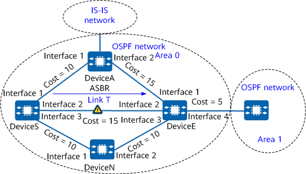

Example for Configuring OSPF IP FRR
Networking Requirements
- If the OSPF fault detection mechanism is used, it takes hundreds of milliseconds to switch traffic to the backup link. During this period, traffic is interrupted.
- Traffic may be switched to the link that passes through DeviceA. DeviceA is an ASBR and is not expected to function as a backup device.
If a fault occurs on the network, OSPF IP FRR can rapidly switch traffic to the backup link without waiting for route convergence, ensuring uninterrupted traffic transmission. In addition, you can also prevent the link that passes through DeviceA from functioning as the FRR backup link.
- OSPF runs on all devices.
- The link costs meet the OSPF IP FRR inequality.
If the primary link (link T) fails, DeviceS immediately switches traffic to the backup link, which passes through DeviceN.
- Based on the network planning, the link that passes through DeviceA does not function as an FRR backup link.

In this example, interface1, interface2, interface3, and interface4 represent 10GE 0/0/1, 10GE 0/0/2, 10GE 0/0/3, and 10GE0/0/4, respectively.

Device |
Router ID |
Interface |
IP Address |
|---|---|---|---|
DeviceS |
1.1.1.1 |
10GE0/0/1 |
10.1.1.1/24 |
10GE0/0/2 |
10.1.2.1/24 |
||
10GE0/0/3 |
10.1.3.1/24 |
||
DeviceA |
2.2.2.2 |
10GE0/0/1 |
10.1.1.2/24 |
10GE0/0/2 |
10.2.1.2/24 |
||
DeviceN |
3.3.3.3 |
10GE0/0/1 |
10.1.3.2/24 |
10GE0/0/2 |
10.2.3.2/24 |
||
DeviceE |
4.4.4.4 |
10GE0/0/1 |
10.2.1.1/24 |
10GE0/0/2 |
10.1.2.2/24 |
||
10GE0/0/3 |
10.2.3.1/24 |
||
10GE0/0/4 |
172.17.1.1/24 |
Precautions
- Before configuring OSPF IP FRR, disabling FRR on specific interfaces is recommended. This prevents the links connected to these interfaces from being calculated as backup links during FRR calculation.
- When OSPF IP FRR is configured, the underlying layer must be able to quickly respond to link changes so that traffic can be quickly switched to the backup link. After the bfd all-interfaces frr-binding command is run, the BFD session status is bound to the link status of the interface (when the BFD session goes down, the link status of the interface also goes down). In this manner, faults can be rapidly detected.
- To improve security, OSPF area authentication or interface authentication is recommended. For details, see "Improving OSPF Network Security." OSPF area authentication is used as an example. For details, see "Example for Configuring Basic OSPF Functions."
Configuration Roadmap
Configure basic OSPF functions on each device.
Configure BFD for OSPF on all the devices in area 0.
Set link costs to ensure that link T is preferentially selected to transmit traffic.
Disable FRR on a specified interface of DeviceS.
- Enable OSPF IP FRR on DeviceS to protect the traffic it forwards.
Procedure
- Assign an IP address to each interface.
Assign an IP address to each interface according to Figure 1. For detailed configurations, see Configuration Scripts.
- Configure basic OSPF functions.
See Example for Configuring Basic OSPF Functions. For detailed configurations, see Configuration Scripts.
- Configure BFD for OSPF on all the devices in area 0.
# Configure DeviceS.
[DeviceS] bfd [DeviceS-bfd] quit [DeviceS] ospf 1 [DeviceS-ospf-1] bfd all-interfaces enable [DeviceS-ospf-1] quit
The configurations of DeviceA, DeviceN, and DeviceE are similar to the configuration of DeviceS. For detailed configurations, see Configuration Scripts.
- Set the costs of links to ensure that link T is selected to transmit traffic.
# Configure DeviceS.
[DeviceS] interface 10ge 0/0/1 [DeviceS-10GE0/0/1] ospf cost 10 [DeviceS-10GE0/0/1] quit [DeviceS] interface 10ge 0/0/2 [DeviceS-10GE0/0/2] ospf cost 15 [DeviceS-10GE0/0/2] quit [DeviceS] interface 10ge 0/0/3 [DeviceS-10GE0/0/3] ospf cost 10 [DeviceS-10GE0/0/3] quit
# Configure DeviceA.
[DeviceA] interface 10ge 0/0/2 [DeviceA-10GE0/0/2] ospf cost 15 [DeviceA-10GE0/0/2] quit
# Configure DeviceN.
[DeviceN] interface 10ge 0/0/2 [DeviceN-10GE0/0/2] ospf cost 10 [DeviceN-10GE0/0/2] quit
- Disable FRR on a specified interface of DeviceS.
[DeviceS] interface 10ge 0/0/1 [DeviceS-10GE0/0/1] ospf frr block [DeviceS-10GE0/0/1] quit
- Enable OSPF IP FRR, and bind IP FRR and BFD on DeviceS.
[DeviceS] ospf [DeviceS-ospf-1] frr [DeviceS-ospf-1-frr] loop-free-alternate [DeviceS-ospf-1-frr] quit [DeviceS-ospf-1] bfd all-interfaces frr-binding [DeviceS-ospf-1] quit
Verifying the Configuration
# Run the display ospf routing command on DeviceS to check routing information.
[DeviceS] display ospf routing router-id 4.4.4.4
OSPF Process 1 with Router ID 1.1.1.1
Destination : 4.4.4.4 Route Type : Intra-area
Area : 0.0.0.1 AdvRouter : 4.4.4.4
Type : ASBR
URT Cost : 59
NextHop : 10.1.2.2 Interface : 10GE0/0/2
Backup Nexthop : 10.1.3.2 Backup Interface : 10GE0/0/3 Backup Type : LFA LINK
The command output shows that a backup link has been generated through FRR calculation on DeviceS.
Configuration Scripts
DeviceS
# sysname DeviceS # bfd # interface 10GE0/0/1 ip address 10.1.1.1 255.255.255.0 ospf frr block ospf cost 10 # interface 10GE0/0/2 ip address 10.1.2.1 255.255.255.0 ospf cost 15 # interface 10GE0/0/3 ip address 10.1.3.1 255.255.255.0 ospf cost 10 # interface LoopBack0 ip address 1.1.1.1 255.255.255.255 # ospf 1 router-id 1.1.1.1 bfd all-interfaces enable bfd all-interfaces frr-binding frr loop-free-alternate area 0.0.0.0 network 10.1.1.0 0.0.0.255 network 10.1.2.0 0.0.0.255 network 10.1.3.0 0.0.0.255 # return
DeviceA
# sysname DeviceA # bfd # interface 10GE0/0/1 ip address 10.1.1.2 255.255.255.0 ospf cost 10 # interface 10GE0/0/2 ip address 10.2.1.2 255.255.255.0 ospf cost 15 # interface LoopBack0 ip address 2.2.2.2 255.255.255.255 # ospf 1 router-id 2.2.2.2 bfd all-interfaces enable area 0.0.0.0 network 10.1.1.0 0.0.0.255 network 10.2.2.0 0.0.0.255 # return
DeviceN
# sysname DeviceN # bfd # interface 10GE0/0/1 ip address 10.1.3.2 255.255.255.0 ospf cost 10 # interface 10GE0/0/2 ip address 10.2.3.2 255.255.255.0 ospf cost 10 # interface LoopBack0 ip address 3.3.3.3 255.255.255.255 # ospf 1 router-id 3.3.3.3 bfd all-interfaces enable area 0.0.0.0 network 10.1.3.0 0.0.0.255 network 10.2.3.0 0.0.0.255 # return
DeviceE
# sysname DeviceE # bfd # interface 10GE0/0/1 ip address 10.2.1.1 255.255.255.0 # interface 10GE0/0/2 ip address 10.1.2.2 255.255.255.0 # interface 10GE0/0/3 ip address 10.2.3.1 255.255.255.0 # interface 10GE0/0/4 ip address 172.17.1.1 255.255.255.0 ospf cost 5 # interface LoopBack0 ip address 4.4.4.4 255.255.255.255 # ospf 1 router-id 4.4.4.4 bfd all-interfaces enable area 0.0.0.0 network 10.1.1.0 0.0.0.255 network 10.1.2.0 0.0.0.255 network 10.1.3.0 0.0.0.255 network 172.17.1.0 0.0.0.255 # return